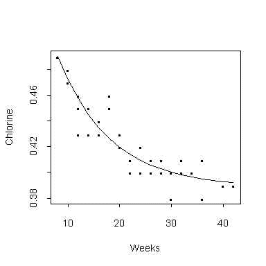

| / Home |
Keywords: nonlinear regression, pure error, goodness of fit
The data are from a Proctor and Gamble study reported by Smith and Dubey (1964) on the amount of available chlorine in a product as a function of time since manufacture. Theoretical considerations lead to the model
Chlorine = a + (0.49 - a) exp{ -b (Weeks - 8) }
| Variable | Description | ||
| Weeks | Time in weeks since manufacture | ||
| Chlorine | Available chlorine | ||
Data File (tab-delimited text)
| Jennrich, R. I., and Bright, P. B. (1976). Fitting systems of linear differential equations using computer generated exact derivatives. Technometrics 18, 385-392. |
| Jennrich, R. I. (1995). An Introduction to Computational Statistics. Prentice-Hall, Englewood Cliffs, New Jersey. Section 8.2.1. |
The plot gives the data and the theoretical curve fitted by least squares:

|
Home - About Us -
Contact Us Copyright © Gordon Smyth |